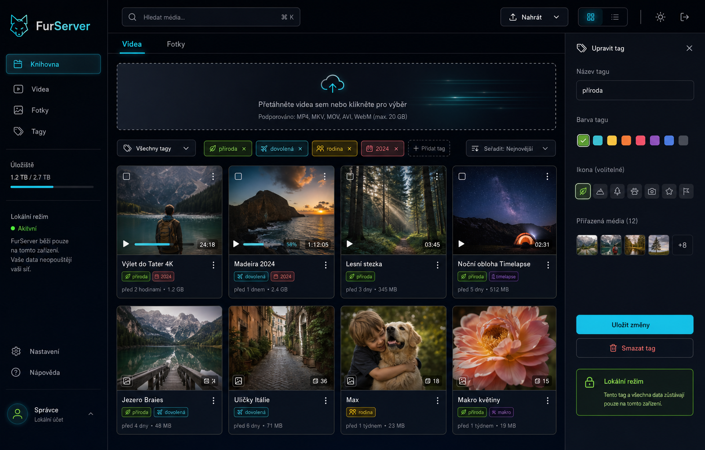

Lokální login
První spuštění vytvoří účet uložený v `data/users.json`. Hesla jsou hashovaná a session chrání knihovnu i soubory.
Moderní lokální media vault pro videa, fotky, tagy a soukromé účty. Flask aplikace běží u tebe na počítači a metadata drží v JSON souborech projektu.

První spuštění vytvoří účet uložený v `data/users.json`. Hesla jsou hashovaná a session chrání knihovnu i soubory.
Videa i fotky mají vlastní tagy, filtrování, editaci a vyhledávání přes názvy i štítky.
Responzivní UI s animacemi, preview kartami, command barem, upload modalem a přehrávačem s lokálním progressem.
FurServer je lokální Flask aplikace. Netlify hostuje jen tuhle prezentační stránku, samotný upload server se spouští na tvém zařízení.
git clone https://github.com/hovnokleslo14/furserver.git
cd furserver
pip install -r requirements.txt
python app.py